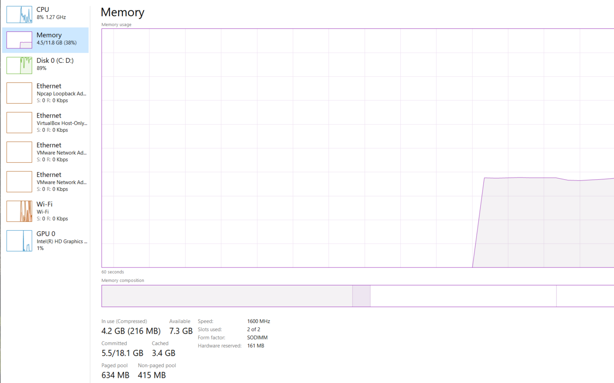

Features
Fast
Unlike Windows, which slows down over time, Vale OS stays performant with minimal maintenance work. Every aspect of Vale OS has been selected for maximum performance, getting the fastest experience possible for the smallest possible resource usage, whether you're running machine learning toolchains, gaming, or streaming.
Secure
Vale OS, like other members of the Linux family, is almost insusceptible to viruses and malware. It's based on the same kernel that powers the International Space Station and the People's Bank of China. Frequent updates keep your system secure, but unlike in Windows, you can choose when you want to update, with no reboot necessary.
Open-Source
While both Mac OSX and Windows are proprietary, Vale OS is entirely open source. That means the code is free to view, download, and modify. As a result, Vale OS is configurable and modular to the core, and every component has been peer-reviewed by members of the open source community for security, transparency, and efficiency.
Eco-Friendly
Well, how does all of this make the operating system eco-friendly?
1. Vale OS revives old computers
Vale OS will run fine with only half a gigabyte of memory and a 25 gigabyte hard drive, and it works with any computer processor that's 64-bit. In short, that means you can revive almost any old PC, dating back to 2008 - over a decade ago!
Installing Vale OS on an old PC saves that computer from becoming electronic waste (or e-waste). Improperly disposed electronics contribute to pollution by exposing toxic heavy metals like lead and mercury to the environment, and the mining of the rare earth metals that power most electronics has contributed to environmental and human health degradation in environments across the globe.
2. Vale OS extends the lifetime of current computers
The greatest limiting factor for a PC's lifespan is wear and tear to its CPU processor from heavy use, as well as damage to internal components from heat.
Vale OS uses 9% of the memory that Windows does, and 25% of the CPU usage. The result is a computer that stays performant over time - keeping itself out of the e-waste bin for far longer.
Pictured below: Vale OS on left, and Windows on right, on a clean boot.
 |
 |
Sources 1
3. Vale OS lowers your computer's power consumption
Since Vale OS only consumes about 25% of the processor usage of Windows, and since processor usage (both GPU and CPU) in a computer draws the most electricity by far, switching to Vale OS cuts your PC's power consumption roughly by four times.
That's not just great for your electricity bill, but it also directly correlates to reduced carbon in the atmosphere, since most electricity is still generated by fossil fuel burning plants.
In fact, the average Windows laptop between 44 and 88 kg of CO2 a year, while the average Windows PC consumes 175 kg - almost 2% the carbon emissions of the entire country of Belgium. By switching to Vale OS, those numbers fall to only 44 kg for the desktop and 11-22 kg for the laptop.